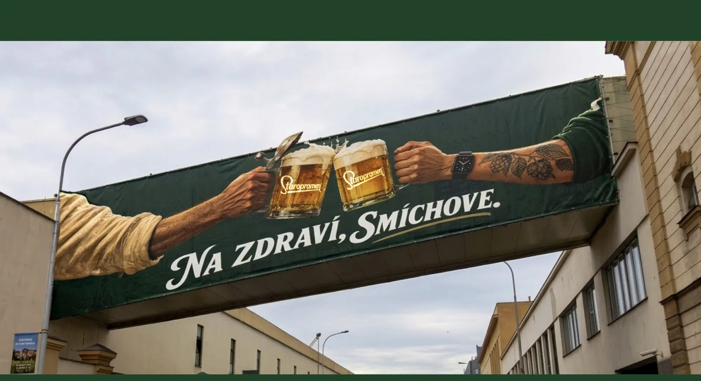
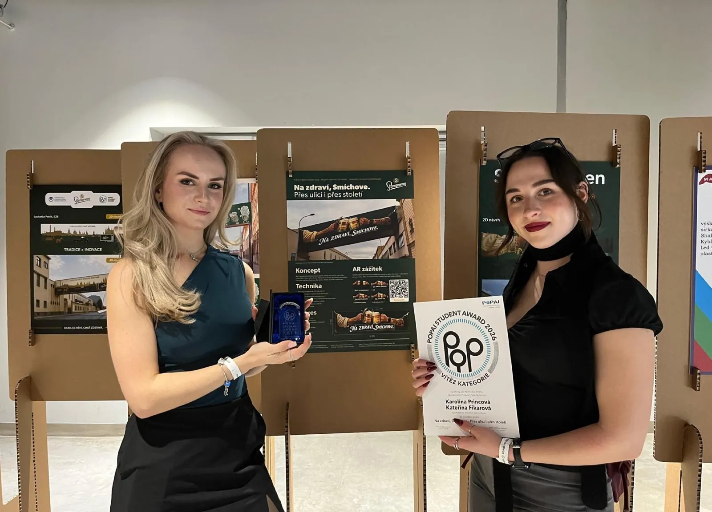
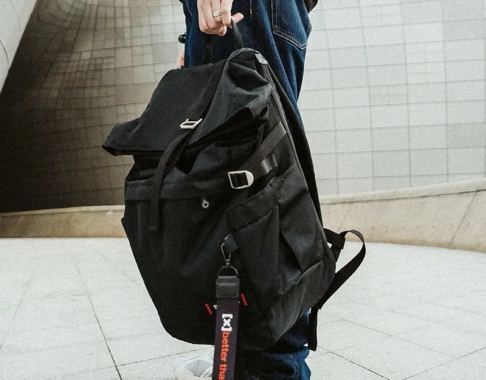

Prácevšeho druhu.
Jsem tak trochu Ferda mravenec: grafika, branding, sociální sítě i video. Od prvního nápadu po finální realizaci to donesu až do cíle.
 Moje projekty
Moje projekty

Vítěz POPAI 2026 Na zdraví, SmíchoveMost pro Pivovary Staropramen
Baví mě propojovat lidi, značky  a vizuální komunikaci.
Ráda u toho zůstanu celou cestu:
a vizuální komunikaci.
Ráda u toho zůstanu celou cestu:
Studuju grafický a mediální design na VŠKK a pracuju jako Social Media Content Manager v Kreativním Kanclu.

BrandingIdentity, se kterými se lidé ztotožní
Výzkum, strategie, claimy, logo a vizuální systém.
Aplikace a weby, které dávají smysl
Od uživatelské cesty po grafiku, kterou lidé sdílí.
 Sociální sítě
Sociální sítě
Obsah od scénáře po střih
Focení, natáčení, střih, copy. A klidně i před kamerou.
Koncept
Kampaně s jedním silným nápadem
Nápady, které vydrží roky, ne jednu sezónu.